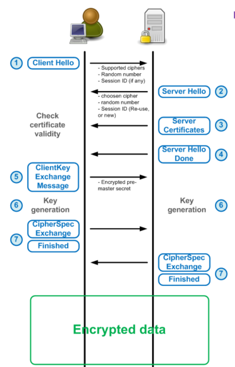

数字证书原理
SSL/TLS协议
TLS（Transport Layer Security，传输层安全协议），及其前身SSL（Secure Sockets Layer，安全套接层）是一种安全协议，目的是为互联网通信提供安全及数据完整性保障。
TLS协议的优势是与高层的应用层协议（如HTTP、FTP、Telnet等）无耦合。应用层协议能透明地运行在TLS协议之上，由TLS协议进行创建加密通道需要的协商和认证。应用层协议传送的数据在通过TLS协议时都会被加密，从而保证通信的私密性。
TLS协议是可选的，必须配置客户端和服务器才能使用。主要有两种方式实现这一目标：一个是使用统一的TLS协议通信端口（例如：用于HTTPS的端口443）；另一个是客户端请求服务器连接到TLS时使用特定的协议机制（例如：邮件、新闻协议和STARTTLS）。一旦客户端和服务器都同意使用TLS协议，他们通过使用一个握手过程协商出一个有状态的连接以传输数据。
TLS协议使用以下三种机制为信息通信提供安全传输：
1、隐秘性，所有通信都通过加密后进行传播
2、身份认证，通过证书进行认证
3、可靠性，通过校验数据完整性维护一个可靠的安全连接
TLS协议的工作机制
TLS协议由TLS Record Layer（TLS 记录协议）和TLS handshake protocol（TLS握手协议）两个部分组成。
TLS Record Layer
为每条信息提供一个header和在尾部生成一个从Message Authentication Code (MAC) 得到的hash值，其中header由5 bytes组成，分别是协议说明(1bytes),协议版本(2bytes)和长度(2bytes)，跟在header后面的协议信息长度不得超过16384bytes。
TLS handshake protocol
通过握手协议，客户端和服务器协商各种参数用于创建安全连接，主要步骤如下：

TLS协议握手协议首先，还是要经过TCP三次握手建立连接，然后才是TLS握手的开始：
首先还是要经过TCP三次握手建立连接，然后才是TLS握手的开始：
ClientHello：Client端将自己的TLS协议版本，加密套件，压缩方法，随机数，SessionID(未填充)发送给Server端
ServerHello：Server端将选择后的SSL协议版本，压缩算法，密码套件，填充SessionID，生成的随机数等信息发送给Client端
ServerCertificates：Server端将自己的数字证书(包含公钥)，发送给Client端。(证书需要从数字证书认证机构(CA)申请，证书是对于服务端的一种认证)，若要进行更为安全的数据通信，Server端还可以向Client端发送Cerficate Request来要去客户端发送对方的证书进行合法性的认证。
ServerHelloDone：当完成ServerHello后，Server端会发送Server Hello Done的消息给客户端，表示ServerHello 结束了。
ClientKeyExchage：当Client端收到Server端的证书等信息后，会先对服务端的证书进行检查，检查证书的完整性以及证书跟服务端域名是否吻合，然后使用加密算法生成一个PreMaster Secret，并通过Server端的公钥进行加密，然后发送给Server端。
ClientFinishd：Client端会发送一个ChangeCipherSpec(一种协议，数据只有一字节)，用于告知Server端已经切换到之前协商好的加密套件的状态，准备使用之前协商好的加密套件加密数据并进行传输了。然后使用Master Secret(通过两个随机数、PreMaster Secret和加密算法计算得出)加密一段Finish的数据传送给服务端，此数据是为了在正式传输应用数据之前对刚刚握手建立起来的加解密通道进行验证。
Server Finishd：Sever端在接收到Client端传过来的加密数据后，使用私钥对这段加密数据进行解密，并对数据进行验证，然后会给客户端发送一个ChangeCipherSpec，告知客户端已经切换到协商过的加密套件状态，准备使用加密套件加密数据并传输了。之后，服务端也会使用Master Secret加密一段Finish消息发送给客户端，以验证之前通过握手建立起来的加解密通道是否成功。
根据之前的握手信息，如果客户端和服务端都能对Finish信息进行正常加解密且消息正确的被验证，则说明握手通道已经建立成功。
接下来，双方所有的通信数据都通过Master Secret进行加密后传输。
证书的主要内容
◆Issuer (证书的发布机构)
指出是什么机构颁发的这个证书，也就是指明这个证书是哪个公司创建的(只是创建证书，不是指证书的使用者)。
◆Start date , Expire date (证书的有效期)
也就是证书的有效时间，或者说证书的使用期限。 过了有效期限，证书就会作废，不能使用了。
◆Public key (公钥)
用来加解密信息。
◆Subject (主题)
这个证书是发布给谁的，或者说证书的所有者，一般是某个人或者某个公司名称、机构的名称、公司网站的网址等。
◆Signature algorithm (签名所使用的算法)
就是指的这个数字证书的数字签名所使用的加密算法，这样就可以使用证书发布机构的证书里面的公钥，根据这个算法对指纹进行解密。指纹的加密结果就是数字签名。
◆Thumbprint, Thumbprint algorithm (指纹以及指纹算法)
这个是用来保证证书的完整性的，也就是说确保证书没有被修改过。 其原理就是在发布证书时，发布者根据指纹算法(一个hash算法)计算证书内容的hash值(指纹)并和证书放在一起，使用者在打开证书时，自己也根据指纹算法计算一下证书的hash值(指纹)，如果和刚开始的值对得上，就说明证书没有被修改过，因为证书的内容被修改后，根据证书的内容计算的出的hash值(指纹)是会变化的。 注意，这个指纹会使用这个证书机构的私钥用签名算法(Signature algorithm)加密后和证书放在一起。
证书的内容大致如下：
-----BEGIN CERTIFICATE-----
subject: CN=localhost.localdomain,O=localdomain,C=CN
start date: Jul 24 15:46:10 2019 GMT
expire date: Jun 28 15:46:10 2024 GMT
common name: localhost.localdomain
issuer: CN=localhost.localdomain.87263,O=localdomain,C=CN
public key: xxxxxxxxxxxxxx（很长一串）#CA会把public key对应的private key交给Server
#{}中的内容是使用CA机构的私钥进行加密得到，需要使用对应的公钥进行解密
{
证书指纹:对证书的所有内容（content）使用hash算法计算得到
指纹算法:指出计算指纹的hash算法
}
-----END CERTIFICATE-----
从上面的证书可以看出，要验证服务器证书的合法性就必须拥有CA机构的公钥，那么CA机构的一定存在自己的证书，所以在验证服务器证书的合法性时需要使用SSL请求的客户端拥有CA机构证书。
对等证书校验（client确认server的合法性）
HTTPS协议使用的对等证书校验的方式，即Client通过信任的证书颁发机构（CA）颁发的证书来确认服务端发送过来证书的有效性。
在curl命令行工具中可以使用--cacert参数来指定证书文件的位置。
校验服务器证书的具体过程：
（1）客户端读取证书中的Issuer(发布机构)，然后在客户端受信任的证书颁发机构（CA）的证书中寻找对应证书颁发机构的证书，用于校验证书是否为信任的颁发机构颁发的。
（2）如果找不到该证书颁发机构的证书，客户端就会报错，说明服务器发来的证书是不可信任的。
（3）如果找到颁发机构的证书，那么客户端就会从对应的证书中获得的公钥，然后使用公钥解密被加密的证书指纹以及指纹算法
（4）客户端使用解密获得的指纹加密算法计算出服务器发来的证书的指纹，将计算结果与解密获得的证书指纹对比，如果一致，说明服务器发来的证书肯定没有被修改过，并且证书是受信任的证书颁发机构发布的
（5）此时客户端就可以读取证书中的公钥，用于后续加密了
非对等证书校验（不验证server的合法性）
跳过校验服务器证书合法性的步骤，并直接使用服务器发送的证书中的公钥加密相应的内容。在curl命令行工具中可以使用-k/--insecure参数来跳过证书校验。
参考
https://www.cnblogs.com/JeffreySun/archive/2010/06/24/1627247.html
https://www.cnblogs.com/codecc/p/5192023.html
https://blog.csdn.net/chengqiuming/article/details/83115642